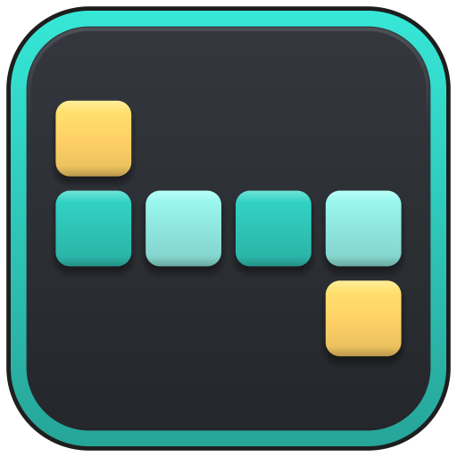
Part-aware seams, unwrap and packing in one click, with a live HUD that tells you how good the result really is. Not happy? One Ctrl+Z brings everything back.
Auto UV marks the seams, unwraps every part and packs the islands into 0–1 in a single step. The result appears instantly in the viewport HUD and the Results panel.
Ctrl+Z undoes the whole operation at once: UVs, seams, selection and mode.
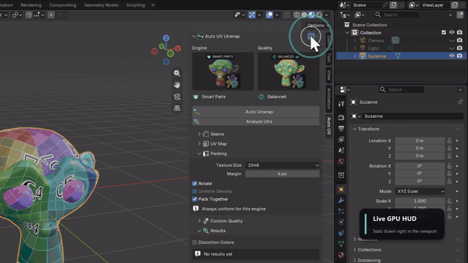
Smart UV Project cuts by angle only. The Smart Parts engine finds the real parts of your model first, flattens each one, measures the distortion and only cuts again where it is actually needed.
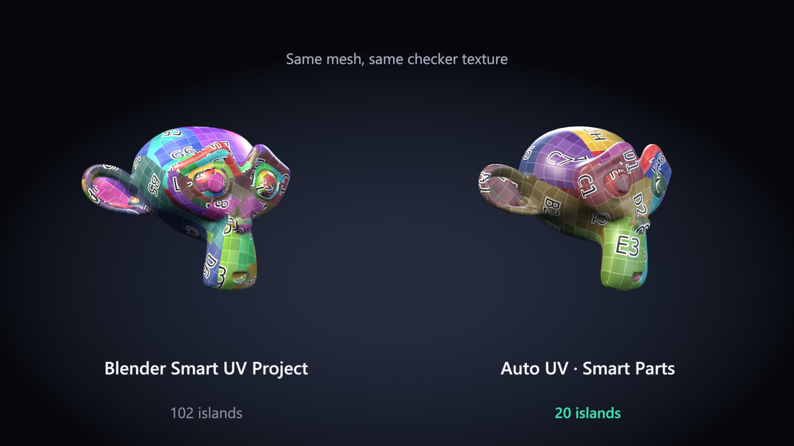
| Mesh (Balanced) | Blender Smart UV Project | Auto UV · Smart Parts |
|---|---|---|
| Suzanne | 102 islands · avg 0.208 | 20 islands · avg 0.069 |
| Torus | 10 islands · avg 0.155 | 2 islands · avg 0.044 |
| Rounded cube | 6 islands · avg 0.155 | 4 islands · avg 0.060 |
Average distortion, lower is better. All numbers computed live in Blender by the add-on.
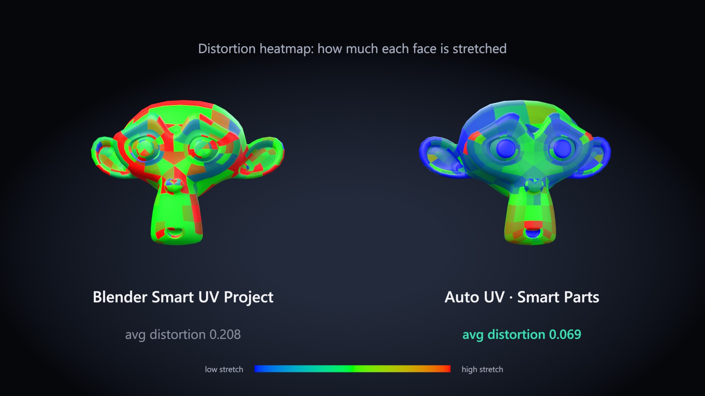
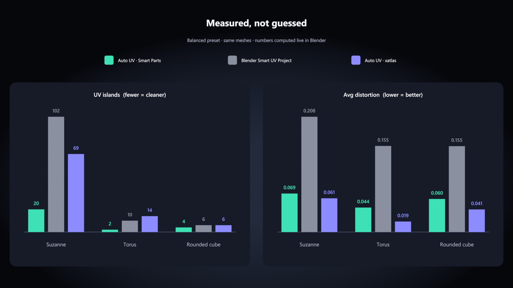
Fast, Balanced, Quality, or Custom with your own distortion threshold, split depth, unwrap method and pack shape. Visual galleries show what you get before you click.
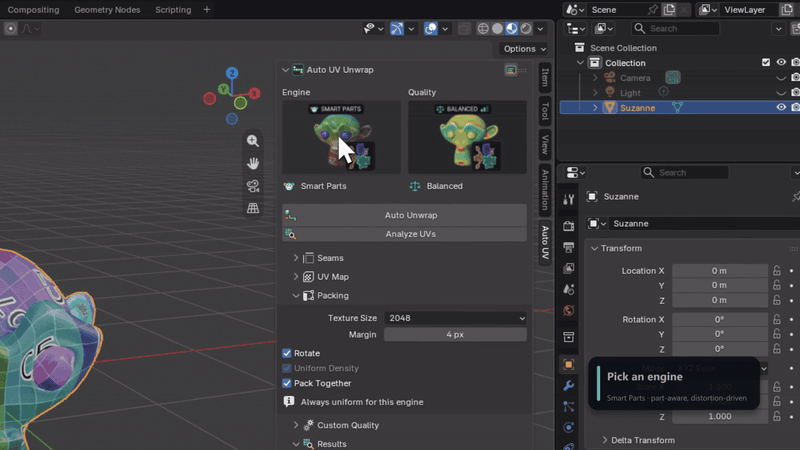
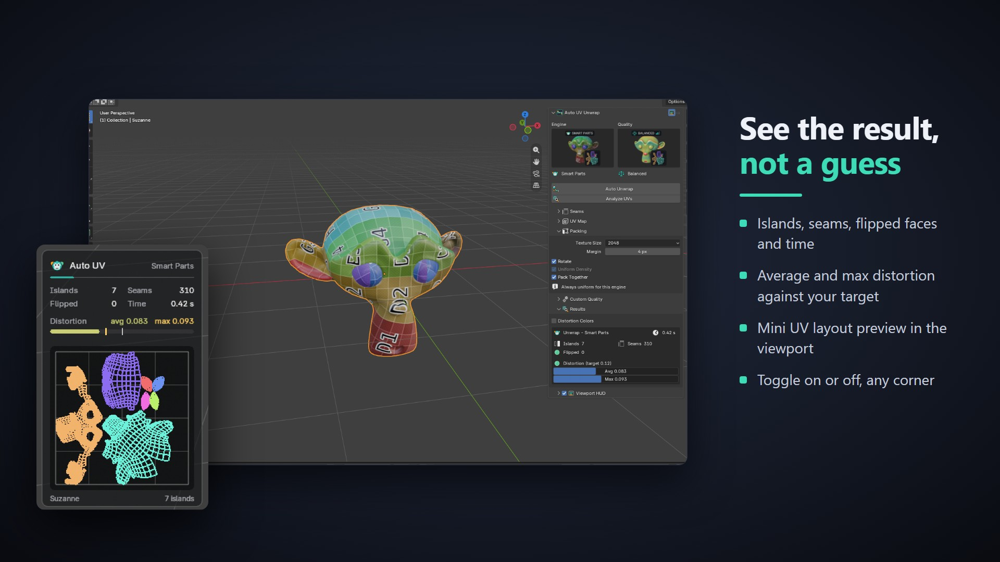
Measure UVs you made by hand or with another tool. Toggle Blender's stretch overlay from the panel, or write a distortion color attribute and see the stretch on the mesh as a heatmap.
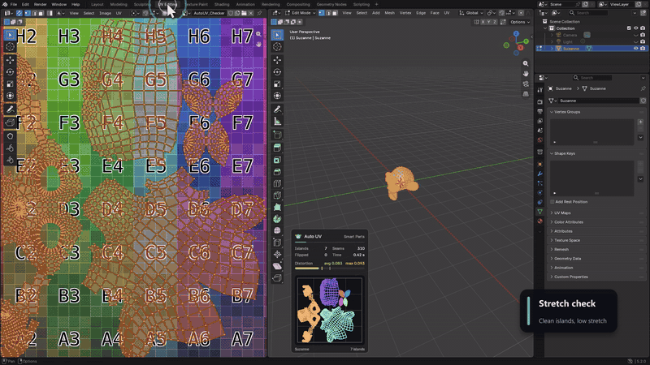
Charts above your target are cut and re-flattened; small leftovers merge back when the stretch allows.
Seams you marked yourself are always kept. Seams from a previous Auto UV run are replaced.
Packs into 0–1 with a pixel margin from your texture size (256 to 8K), with optional island rotation.
Pack all selected objects into one shared UV space, or let each object fill 0–1 on its own.
Unwrap whole objects, or only the faces you selected in Edit Mode.
Sidebar N › Auto UV, the U menu, the UV Editor and the Object menu.
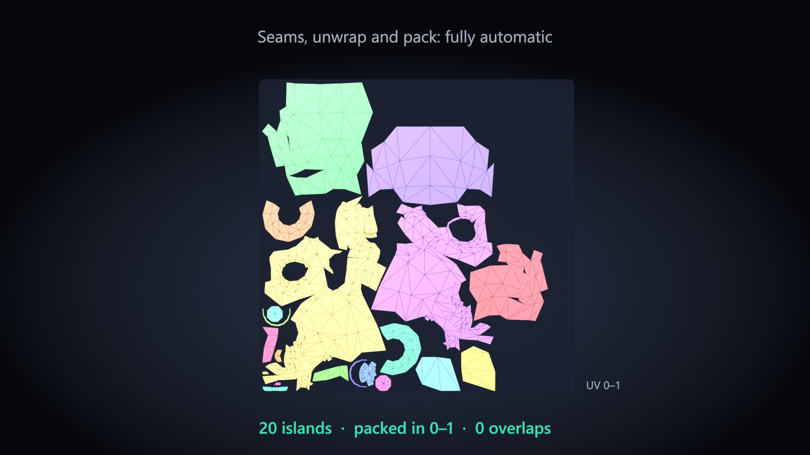
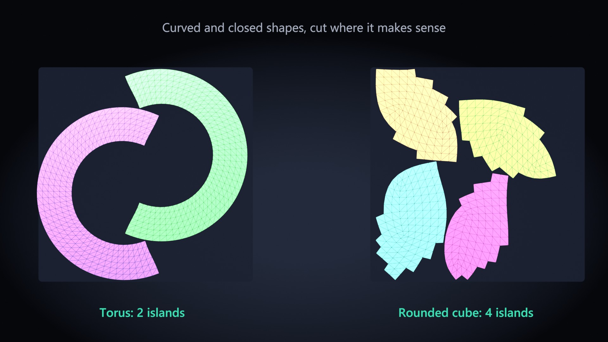
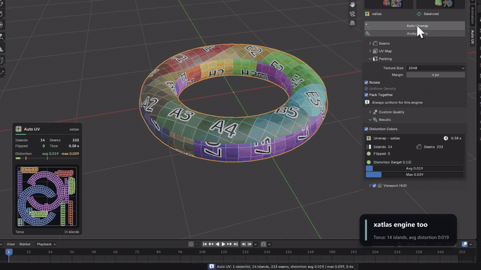